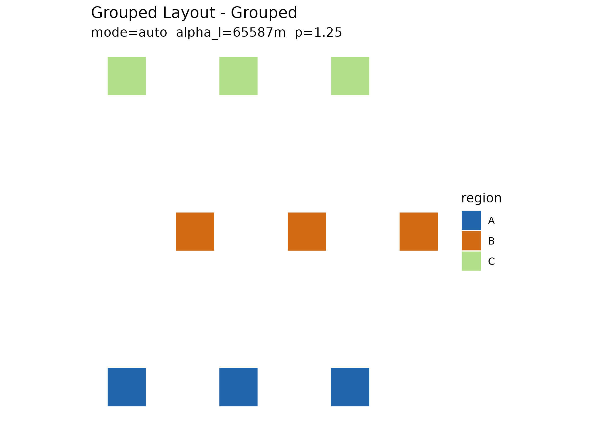

State-first composition with dragmapr
Source:vignettes/state-first-composition.Rmd
state-first-composition.Rmdexplodemap computes the geometry of an exploded
layout. Manual composition – nudging regions and labels until the map
reads well – belongs to the dragmapr editor. The
bridge between them is a single, reusable composition
object: a dragmapr_state.
The workflow is compute once, then compose and render from the state:
explode_grouped() -> as_dragmapr_state() -> d_edit() -> focus_map(state = )
(geometry) (handoff) (compose) render_dragged_map(state = )1. Compute the layout
library(explodemap)
# A few regions, each with several units.
unit_square <- function(x0, y0, size = 40000) {
sf::st_polygon(list(rbind(
c(x0, y0), c(x0 + size, y0), c(x0 + size, y0 + size),
c(x0, y0 + size), c(x0, y0)
)))
}
grid <- expand.grid(col = 0:2, row = 0:2)
regions <- sf::st_sf(
region = rep(c("A", "B", "C"), each = 3),
unit = sprintf("u%02d", seq_len(9)),
geometry = sf::st_sfc(
lapply(seq_len(9), function(i) unit_square(grid$col[i] * 50000, grid$row[i] * 50000)),
crs = 3857
)
)
layout <- explode_grouped(regions, region_col = "region")
#> Level 1: Applying local explosion (alpha_l = 65587 m)...
#> Level 2: Computing anchor positions (mode = auto)...
#> Applying anchor displacement...
plot(layout)
2. Hand the layout over as a state
as_dragmapr_state() is the preferred handoff. It
converts the exploded anchors into metre deltas and records the
projected CRS plus a geometry_id, so the result is a
durable, reproducible composition:
state <- as_dragmapr_state(layout)
state
#> $level
#> [1] "region"
#>
#> $region_offsets
#> region dx_m dy_m
#> 1 A 0 0
#> 2 B 0 0
#> 3 C 0 0
#>
#> $label_offsets
#> [1] label_id region dx_m dy_m
#> <0 rows> (or 0-length row.names)
#>
#> $expanded_groups
#> character(0)
#>
#> $view
#> NULL
#>
#> $version
#> [1] 0
#>
#> $crs
#> [1] 3857
#>
#> $geometry_id
#> [1] "Grouped Layout"
#>
#> $selected_feature
#> NULL
#>
#> $styles
#> [1] region fill stroke stroke_width opacity
#> [6] label_visible highlight
#> <0 rows> (or 0-length row.names)
#>
#> $region_col
#> [1] "region"
#>
#> $label_id_col
#> [1] "label_id"
#>
#> $binding
#> $binding$region_col
#> [1] "region"
#>
#> $binding$label_id_col
#> [1] "label_id"
#>
#>
#> $schema_version
#> [1] "1.2.0"
#>
#> $package_version
#> [1] "0.3.1"
#>
#> attr(,"class")
#> [1] "dragmapr_state"The older
as_dragmapr()returns a rawdragmapr_layout(geometry plus offset tables). It remains supported as a low-level escape hatch, butas_dragmapr_state()is the recommended entry point.
3. Compose
Open the dragmapr editor seeded with the state. In Shiny, capture
each edit back into a state with
dragmapr::d_widget_state():
dragmapr::d_edit(layout, state = state)4. Render the composed state
Every downstream renderer accepts the state via state =.
The interactive focus map can even reopen on a saved selection with
restore_selection = TRUE:
state$selected_feature <- "B"
focus_map(layout, state = state, group_col = "region", restore_selection = TRUE)And the static renderer reproduces the composition from geometry plus state, with no recomputation:
dragmapr::render_dragged_map(
layout$sf_grouped,
region_col = "region",
state = state,
file = "composed.png"
)The state also flows through update_exploded_layout(),
so an edited composition can be folded back onto the grouped layout
object itself.
For a complete runnable script, see
system.file("examples/state_first_workflow.R", package = "explodemap").
For a fuller cross-package example that includes layout diagnostics,
label-aware parameter search, a simulated editorial pass, JSON state
persistence, focus_map(), and
dragmapr::render_dragged_map(), run:
source(system.file(
"examples/explodemap_dragmapr_pipeline.R",
package = "explodemap"
))